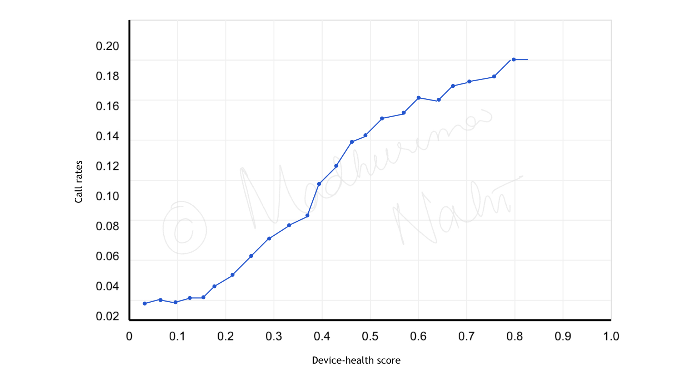

A telecommunications client was spending heavily on reactive service visits — dispatching engineers in response to customer complaints rather than catching infrastructure problems before they caused disruption. A statistical approach was developed to proactively identify at-risk network infrastructure from device-level radio frequency (RF) metrics, enabling targeted preventive maintenance instead.

Three hourly RF metrics were available for each device: signal-to-noise ratio (SNR), downstream receiving power, and upstream transmitting power. Each metric was standardised to the 5th–95th percentile range of observed values to exclude extremes, using
\[S_i = \frac{|x_i - x_{\min}|}{x_{\max} - x_{\min}}\]where \(x_i\) is the hourly metric value. The weight for each metric was determined by measuring the slope of a linear regression between call rates and the normalised metric:
\[w_i = \frac{\Delta\,\text{call rate}}{\Delta\,\text{normalised metric}_i}\]The device health score was then computed as the weighted sum across all three metrics:
\[\text{device health score} = \sum_{i=1}^{3} w_i \times S_i\]Plotting the score against six months of historical service visits and call rates confirmed the expected relationship: higher device health scores correlate with more support calls and more service visits. A threshold of 0.3 was selected from this analysis as the cut-off for flagging a device as high-risk.
Individual high-scoring devices could reflect isolated device faults. Infrastructure failures, by contrast, affect groups of nearby customers. DBSCAN (Density-Based Spatial Clustering of Applications with Noise) was applied to find geographic concentrations of high-risk devices: clusters of at least 10 customers with a device health score above 0.3, within 500 metres of each other.
When a cluster covers a significant geographic area, it points to a faulty network node rather than individual device issues. Daily execution of automated SQL procedures across a 90-day rolling window kept device health profiles and cluster maps continuously updated across the entire region.
The approach was first validated in one region, where it successfully flagged known problematic nodes with high precision. Parameters were then adjusted for regional differences in population density and extrapolated nationwide.
Field operations teams received daily reports identifying emerging high-risk clusters for preventive intervention. This shifted resource allocation from emergency response to planned maintenance, catching failures before they reached customers.
Projected annual savings: $8M+, through reductions of approximately 30,000 customer support calls and 6,000 service visits.